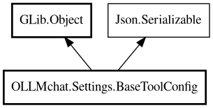

BaseToolConfig
Object Hierarchy:

Description:
public class BaseToolConfig : Object, Serializable
Base configuration class for simple tools that only need enabled/disabled.
This is the base class for all tool configurations. Simple tools like ReadFile, EditFile, and WebFetch can use this class directly.
Complex tools that need additional configuration should extend this class.
All properties must be GObject properties with proper metadata for Phase 2 UI generation via property introspection.
Since:
1.0
Content:
Properties:
Creation methods:
Methods:
Inherited Members:
All known members inherited from class GLib.Object
- @get
- @new
- @ref
- @set
- add_toggle_ref
- add_weak_pointer
- bind_property
- connect
- constructed
- disconnect
- dispose
- dup_data
- dup_qdata
- force_floating
- freeze_notify
- get_class
- get_data
- get_property
- get_qdata
- get_type
- getv
- interface_find_property
- interface_install_property
- interface_list_properties
- is_floating
- new_valist
- new_with_properties
- newv
- notify
- notify_property
- ref_count
- ref_sink
- remove_toggle_ref
- remove_weak_pointer
- replace_data
- replace_qdata
- set_data
- set_data_full
- set_property
- set_qdata
- set_qdata_full
- set_valist
- setv
- steal_data
- steal_qdata
- thaw_notify
- unref
- watch_closure
- weak_ref
- weak_unref
All known members inherited from interface Json.Serializable
- default_deserialize_property
- default_serialize_property
- deserialize_property
- find_property
- get_property
- list_properties
- serialize_property
- set_property